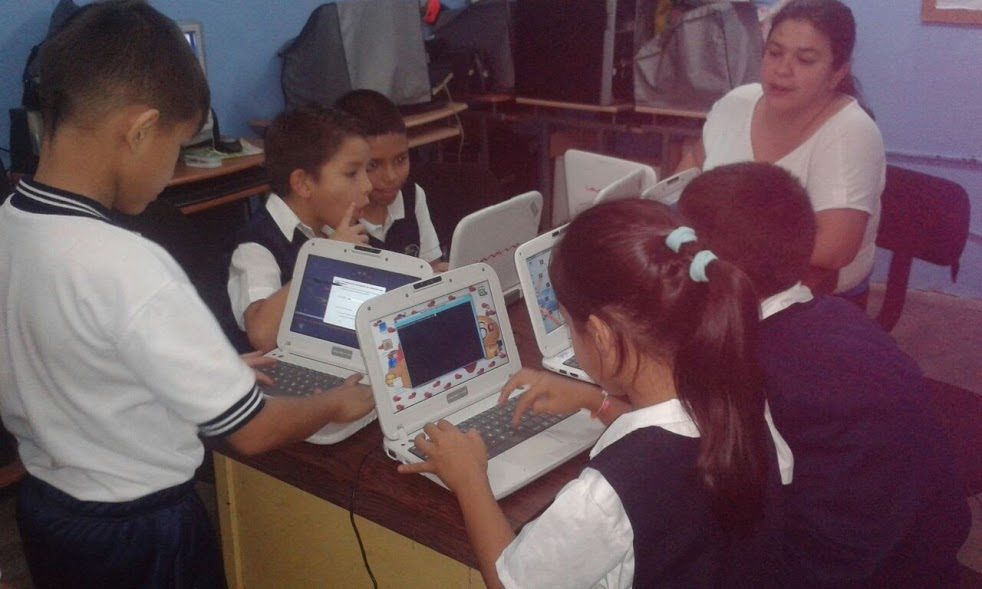
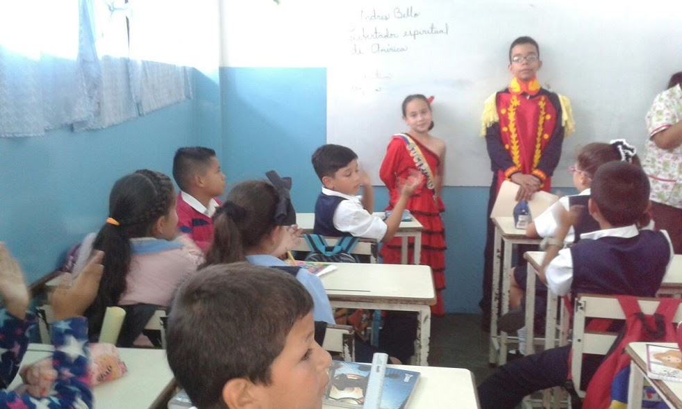
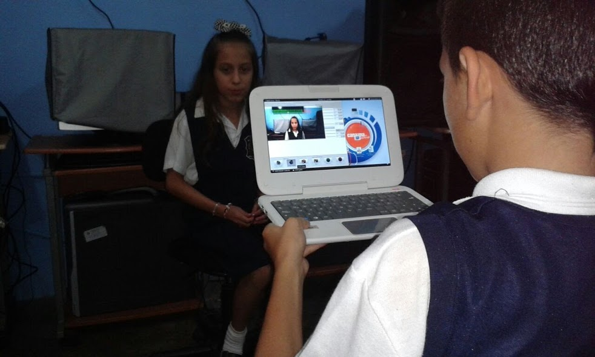

La Escuela Básica Estadal Artesanal Cordero se ha enfocado desde sus
inicios ofrecer a los estudiantes una formación integral para que alcancen
habilidades cognitivas y artesanales que les permitan desenvolverse en una
sociedad de constante evolución. A través de: la pedagogía; la ejecución de los programas educativos del Sistema Educativo Bolivariano y con la participación activa de todos los actores pertenecientes a la escuela.
Egresar de la Escuela Básica Estadal Artesanal Cordero niños y adolescentes capaces de reflexionar acerca de su realidad desde el entorno del municipio Andrés Bello, para que sean cada vez más participativos, protagónicos y corresponsables de su actuación en la comunidad. Asimismo facilitar a los estudiantes y representantes de la institución, los elementos y acciones educativas pertinentes para una formación de calidad, a través de medios instruccionales, vía web, actividades presenciales, para que alcancen habilidades cognitivas y artesanales que les permitan desenvolverse en una sociedad de constante actualización. Por medio de contenidos y estrategias acordes al subsistema de educación primaria, y con la participación activa de todos los actores pertenecientes a la escuela.
Constituir la Escuela Básica Estadal Artesanal Cordero como la institución
modelo en el municipio Andrés Bello y de la división de Dirección de Educación de la
Gobernación del Estado Táchira, y de esta forma educar a los estudiantes en el marco
de la excelencia académica y superar las expectativas de los miembros de la
comunidad educativa, con la convicción de formar en valores a los hombres y mujeres
del futuro, para que sean ciudadanos respetuosos, apegados a las leyes, instruidos,
con amplios conocimientos generales, con un alto nivel de adaptación a la realidad y
con un profundo sentido de disposición, seguridad, y tolerancia.
En este sentido la escuela se proyecta como una institución generadora de
saberes artesanales, donde se forman a todos los niños y adolescentes con la
oportunidad de alanzar las competencias académicas del Currículo Básico Nacional
Bolivariano para comprender, sintetizar y redactar de manera argumentada los
problemas de su contexto, a fin de proponer soluciones y solventar de forma oportuna
la crisis que puedan presentarse en el contexto en el que se desenvuelven.

Se basa en principios aceptados por docentes, educandos, padres, apoderados, y comunidad, para dar pertinencia efectiva a la educación de los alumnos y alumnas del establecimiento y para contribuir al crecimiento integral de todas las personas de la comunidad educativa
Conoce más